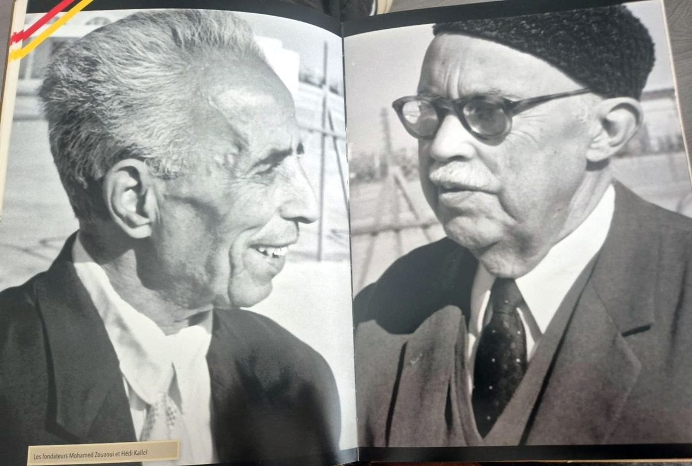
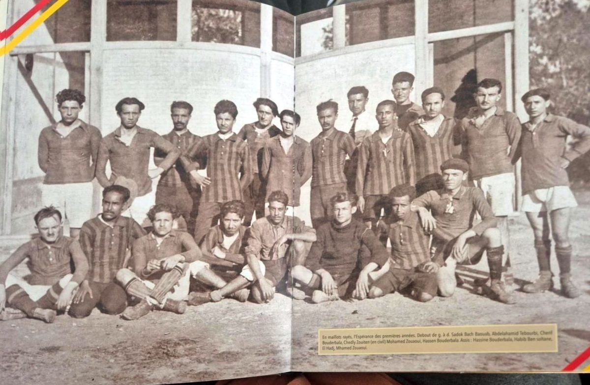
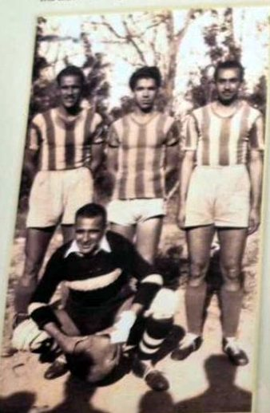
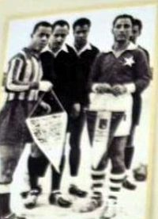
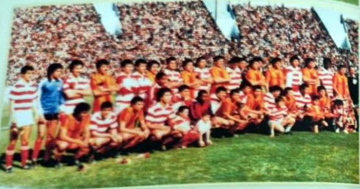
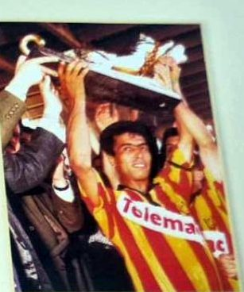
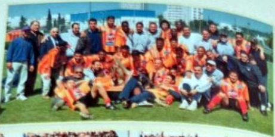
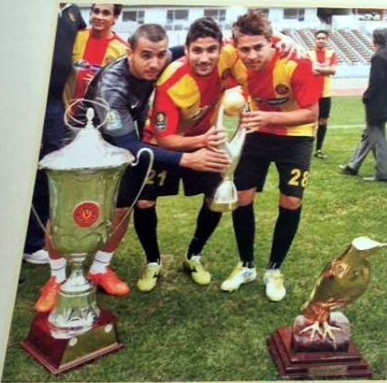

التاريخ.
جذور النادي، والخطّ الزمني من 1919 إلى اليوم، والرجال والصور.
تاريخ الترجي في 10 فصول
رواية واحدة تجمع كتاب تراجي أرشيف وموسوعة الدكتور ضيف الله وكتاب المئوية، بالصور والوثائق.

الفصل 1 · 1918-1920باب سويقة، 1919: ميلاد الترجي
الفصل 2 · 1920-19391920-1939: نادي باب سويقة
الفصل 3 · 1939-19551939-1955: الحرب والبطولات الاستثنائية وأوّل بطولة
الفصل 4 · 1956-19691956-1969: الاستقلال ونهاية عهد زويتن الفصل 5 · 1970-19791970-1979: إفريقيا وقضية 1971 وطارق ذياب
الفصل 5 · 1970-19791970-1979: إفريقيا وقضية 1971 وطارق ذياب
الفصل 6 · 1980-19891980-1989: سنوات ذياب
الفصل 7 · 1990-19991990-1999: إفريقيا المفتوحة
الفصل 8 · 2000-20092000-2009: سبعة ألقاب متتالية ولعنة إفريقيا
الفصل 9 · 2010-20192010-2019: حتى المئوية- الفصل 10 · 2019-2026منذ 2019: القرن الثاني
- الجذورباب سويقة، 1919: التأسيس، بما في ذلك الترخيص الرسمي.
- الخطّ الزمنيمن 1919 إلى اليوم، سنةً بسنة، كل تاريخ بمصدره.
- الموسوعةكبار أسماء النادي في كلّ الاختصاصات، بطاقةً بطاقة.
- النادي متعدّد الاختصاصاتسبعة عشر اختصاصًا في قرن: كرة اليد، الكرة الطائرة، كرة السلة، السباحة، الملاكمة، الجيدو…
- الترجي وبورقيبة والسياسةمن باب سويقة سنة 1919 إلى أزمة 1971.
- الرؤساء et les comitésLes bureaux du club saison par saison, de 1919 à 2007, d'après l'encyclopédie du Dr Dhifallah.
- لاعبو الترجي في المنتخبات الوطنيةكرة القدم منذ 1936، كرة اليد، الكرة الطائرة: كلّ الدوليين من أبناء النادي.
- La sélection de تونس, 1925-1953Les مباراة de la sélection avant l'indépendance, un par un.
- تشكيلات الترجي البطللاعبو كل موسم تُوّج فيه الترجي بالبطولة، من 1942 إلى 2019.
- Le Siècle de l'الترجيLe livre du centenaire, l'une des trois sources de notre histoire, et ses divergences avec les autres.
- معرض الصور161 صورة أرشيفية، من 1920 إلى أيامنا.
- المكتبة المرئيةأفلام، وأرشيف مصوَّر، ونقاشات، مصنّفة حسب الموضوع.
- الكتابحقائق في مواجهة الأكاذيب: التقديم والخاتمة.